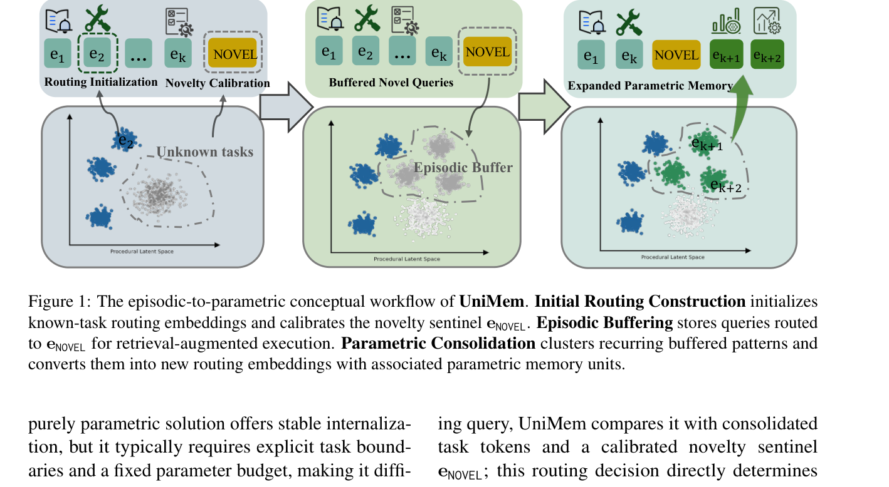
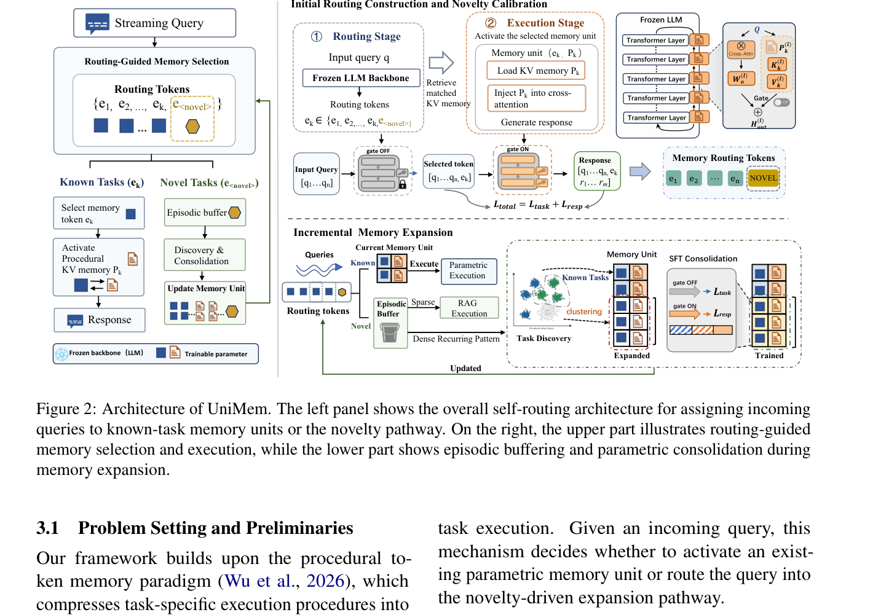

边界无关任务流上的稳定性-可塑性困境
LLM Agent 在真实部署中面对的不是一组预定义的封闭任务集，而是边界无关（boundary-agnostic）、持续演化的任务流——任务类型、频率、复杂度随时间变化，没有明确的任务边界标记。Agent 需要从经验中积累任务知识、复用任务特定的执行策略，但传统记忆方案在这种场景下面临根本性的两难。
两种记忆范式的局限
外部检索记忆（Episodic / RAG）：将任务相关知识存储在模型参数之外，通过上下文窗口注入。优点是能快速吸收新证据（高可塑性），缺点是：
- 无法内化重复出现的执行模式——每次推理都要重新检索，产生持续的检索开销。
- 上下文窗口有限，长时程任务序列中历史证据会被截断或稀释。
- 检索质量依赖于 embedding 质量和检索策略，对语义相近但执行策略不同的任务容易混淆。
参数记忆（Parametric / LoRA / Prefix）：将任务特定行为存储在轻量可训练组件中，骨干权重冻结。优点是一旦学习完成，执行稳定高效（高稳定性），缺点是：
- 通常依赖显式任务边界——需要知道每个样本属于哪个任务才能分配对应的适配器。
- 固定参数预算——预定义的适配器数量无法适应任务组成和规模随时间的变化。
- 顺序吸收新任务模式时存在参数碰撞（parameter collision）和表征干扰。
为什么单一记忆系统无法同时满足稳定性和可塑性？
这是认知科学中的经典结论（McClelland et al., 1995）：一个单一的记忆系统如果要快速吸收新经验（高可塑性），就必须允许参数大幅变动，但这会干扰已存储的知识（低稳定性）；反之，如果要稳定保存知识（高稳定性），参数变动必须受限，但这会减缓新学习（低可塑性）。这两者在同一个参数空间中是根本矛盾的。解决方案不是寻找一个"完美平衡点"，而是用两个互补的系统分别承担两种功能——这正是 UniMem 的核心设计哲学。

互补学习系统（CLS）理论：人脑的记忆架构
UniMem 的设计直接受互补学习系统（Complementary Learning Systems, CLS）理论启发。这一理论由 McClelland、McNaughton 和 O'Reilly 于 1995 年提出，后经 Kumaran 等人（2016）发展，是认知神经科学中解释人脑记忆组织的核心框架。
CLS 理论的核心主张
CLS 理论认为，人脑通过两个互补的记忆系统解决稳定性-可塑性困境：
- 海马体（Hippocampus）：支持新经验的快速情景存储。学习率高，能迅速编码单次经历，但存储是稀疏的、基于实例的，不做泛化。
- 新皮层（Neocortex）：将重复出现的结构渐进巩固为稳定的长期知识。学习率低，通过反复暴露逐渐提取统计规律，但一旦巩固就非常稳定。
关键机制是记忆巩固（memory consolidation）：海马体中存储的情景记忆在离线期间（如睡眠）被"重放"（replay），新皮层从中提取重复模式并逐渐内化。随着时间推移，记忆逐渐从海马体依赖转变为新皮层依赖——这就是为什么近期记忆容易被干扰（海马体未巩固），而远期记忆更稳定（已巩固到新皮层）。
从 CLS 到 UniMem 的问题形式化
CLS 理论启发了 UniMem 的核心问题：LLM Agent 如何在边界无关任务流中自主协调情景检索与选择性参数巩固？
具体来说，需要解决三个子问题：
- 任务识别：给定一个查询，如何判断它属于已知任务（应激活参数记忆）还是新颖任务（应进入情景缓冲）？
- 记忆选择：如果是已知任务，如何选择正确的参数记忆单元？如果是新颖任务，如何高效地用 RAG 执行？
- 自主扩展：何时将情景缓冲区中的重复模式巩固为新的参数记忆单元？如何避免过早分配或参数爆炸？
UniMem 的答案是：用可学习路由 token 作为记忆控制器，将任务识别与任务执行解耦，通过情景-参数生命周期实现按需扩展。
自路由记忆架构：任务识别与任务执行的解耦
UniMem 的核心架构创新是将任务识别（routing）与任务执行（execution）解耦。传统的 token memory（如 TOKMEM）用单个 token 同时承担任务标识和过程编码，但单个 token 的容量不足以编码复杂的过程逻辑。UniMem 保留 token 用于轻量级路由选择，同时为每个已知任务关联一个独立的高容量参数记忆块。

路由 token 矩阵
UniMem 维护一个路由 token 矩阵 $E = [e_1, \ldots, e_K, e_{\text{NOVEL}}]$，其中的 token 分为两类：
- 已知任务 token（$e_k$）：每个对应一个已巩固的任务，关联一个参数记忆单元 $u_k = (e_k, P_k)$，其中 $P_k$ 存储任务特定的执行参数。
- 新颖性哨兵 token（$e_{\text{NOVEL}}$）：经过校准，用于捕获不匹配任何已知任务表示的查询，将其路由到情景缓冲区。
推理时的路由
在推理时，查询 $q$ 通过冻结 LLM 前向得到最终隐藏状态 $h_q$，然后计算路由分布：
这是一个基于点积的 softmax 路由。注意分母只包含已知任务 token（不含 $e_{\text{NOVEL}}$），新颖性判断通过额外的置信度门控机制实现（见第 4 章）。
为什么用 token 做路由而不是用分类头？
用可学习 token 做路由有几个关键优势：(1) 可扩展性——新增任务只需添加一个新的 token 嵌入，不需要修改路由层的结构（分类头的输出维度是固定的）。(2) 几何意义——token 嵌入在同一空间中，可以通过聚类、距离、角度等几何操作分析任务关系（论文的 latent space 可视化就是基于此）。(3) 与 LLM 的兼容性——token 嵌入可以直接插入序列，利用 LLM 的注意力机制进行上下文感知的路由，而不是独立于 LLM 的外部分类器。
解耦优化目标
为了与"先路由后执行"的工作流对齐，UniMem 用两个解耦的目标分别优化路由和执行：
其中 $z \in \{1, \ldots, K, \text{NOVEL}\}$ 是离散路由标签，$\Theta_k = \{P_k, \{g^{(l)}\}\}$ 是任务 $k$ 的参数。关键设计：
- 路由阶段所有参数记忆块都不激活，因此 $\mathcal{L}_{\text{route}}$ 只更新路由 token $E$。
- 执行损失只应用于已知任务样本（路由到新颖性哨兵的样本在校准期间没有关联的参数记忆块），更新选中的参数记忆块 $P_k$ 和门控 $g^{(l)}$。
这种解耦确保了路由学习不会被执行参数的梯度干扰，反之亦然——两个子系统可以独立优化。
新颖性检测：置信度门控与哨兵校准
UniMem 如何判断一个查询是"已知"还是"新颖"？这不是简单的 argmax——因为即使已知任务 token 获得了最高概率，如果置信度很低，也可能是因为查询不属于任何已知任务。UniMem 用双重条件门控解决这个问题。
新颖性哨兵的初始化
在 Phase I（路由空间初始化）中，UniMem 首先学习已知任务的路由 token $\{e_k\}_{k=1}^K$，然后计算平均路由范数：
这为后续的记忆扩展提供了固定的几何尺度。新颖性哨兵初始化为已知路由 token 质心方向附近的一个点：
其中 $\bar{e}$ 是已知路由 token 的平均方向。这个初始化将新颖性哨兵放在与已知任务相同的路由空间中（而不是作为离群点），使它能与现有路由 token 竞争。高斯扰动 $\epsilon$ 的方差为 $(0.05\bar{r})^2$，确保哨兵从质心附近开始但不完全重合。
新颖性校准
为了校准新颖性哨兵，UniMem 从初始训练池中保留一部分任务作为伪未见任务（pseudo-unseen tasks）。这些任务不分配已知任务路由 token，只用于新颖性校准。路由层用 $(K+1)$ 路交叉熵训练，使伪未见任务被路由到 $e_{\text{NOVEL}}$，而已知任务被路由到对应的 $e_k$。
为什么新颖性哨兵要放在质心附近而不是远离已知 token？
直觉上，新颖性检测应该让"新颖"的 token 远离已知 token。但 UniMem 反其道而行之——将 $e_{\text{NOVEL}}$ 放在已知 token 的质心附近。原因是：新颖查询的特征表示通常落在已知任务表示的"间隙"中，而不是在已知空间之外。一个关于"法律推理"的查询，如果训练集中有"数学推理"和"科学推理"，它的隐藏状态会落在这两个已知 token 之间的区域。将哨兵放在质心附近，使它能在这些"间隙"区域与已知 token 竞争。如果哨兵远离已知 token，它只会捕获真正离群的查询（如完全不相关的语言），而无法检测语义相近但任务不同的新颖查询。
置信度门控路由决策
在推理时，UniMem 同时计算已知任务的最大概率 $p^\star = \max_k P(e_k \mid q)$ 和新颖性哨兵的概率 $p_0 = P(e_{\text{NOVEL}} \mid q)$。只有当两个条件同时满足时，才激活已知参数记忆单元：
其中 $\tau_{\text{route}} = 0.7$。这个规则捕获了两种"新颖"情况：
- 显式新颖：新颖性哨兵本身获得比每个已知任务 token 更高的概率（$p_0 > p^\star$）。
- 低置信度拒绝：即使已知任务 token 概率最大，但如果置信度 $p^\star$ 低于阈值 0.7，UniMem 拒绝激活该参数记忆——防止低置信度查询激活错误的记忆块。
论文选择用最大已知概率 $p^\star$ 而不是熵或间隔（margin）作为门控信号，因为：熵对弱竞争 token 的数量敏感，而间隔引入了前两名之间的额外判据。$p^\star$ 直接衡量是否有任何已知记忆单元以足够置信度认领该查询，简单且可解释。
参数记忆：Procedural KV Memory 与门控注入
当查询被路由到已知任务 $e_k$ 时，UniMem 激活关联的参数记忆单元 $u_k = (e_k, P_k)$ 并进入参数执行阶段。$P_k$ 被实例化为Procedural KV Memory——一组可学习的、逐层的键值对。
Procedural KV Memory 的结构
对于每个已知任务 $k$，Procedural KV Memory 在每个 Transformer 层 $l$ 存储可学习的键值对 $(K_k^{(l)}, V_k^{(l)})$。在执行时，选中的 Procedural KV Memory 通过可学习的注入权重 $\{g^{(l)}\}$ 贡献到冻结的自注意力输出：
其中 $Q^{(l)}$ 是层 $l$ 的查询状态（由冻结的查询投影 $W_Q^{(l)}$ 计算），$H_{\text{orig}}^{(l)}$ 是冻结骨干的自注意力输出。
关键实现细节
- 无 RoPE：Procedural KV Memory 不应用旋转位置编码（RoPE），因为这些键值槽编码的是任务级过程语义，而不是位置相关的 token 交互。
- 无因果掩码：cross-attention 不应用因果掩码，使选中的过程记忆对每个序列位置全局可访问。
- 单 slot 退化：当记忆 slot 数 $p=1$ 时，cross-attention 退化为简单形式——只有一个 key，注意力权重恒为 1，每个位置收到相同的任务特定 value 向量。此时 Procedural KV Memory 表现为逐层的任务特定残差信号。
- GQA 处理：对于使用分组查询注意力（GQA）的模型（如 LLaMA-3.2-3B，$H_q=32$ query heads，$H_{kv}=8$ KV heads），Procedural KV Memory 在 $H_{kv}$ 头上参数化以降低参数成本，cross-attention 前将 KV 对重复 $H_q/H_{kv}$ 次。
为什么用 KV 记忆而不是 LoRA？
UniMem 选择 Procedural KV Memory 而不是 LoRA 作为参数记忆的实例化，有几个原因：(1) 推理效率——KV 记忆在推理时只需额外的 cross-attention 计算，不需要修改权重矩阵乘法，与现有的 KV cache 机制天然兼容。(2) 任务隔离——每个任务的 KV 对是完全独立的，不存在 LoRA 的参数碰撞问题（不同任务的低秩更新可能在同一权重空间中干扰）。(3) 可解释性——KV 记忆的注入强度由门控 $g^{(l)}$ 显式控制，可以逐层分析哪些层对任务执行最重要。(4) 与 TOKMEM 的继承关系——UniMem 建立在 procedural token memory 范式（Wu et al., 2026）之上，KV 记忆是该范式的自然扩展。
门控机制的关键性
消融实验（Table 3）显示，禁用门控机制（w/o KV gate）导致性能急剧下降：在 LLaMA-3.2-3B 上，10 任务 EM 从 51.60 降到 35.80，50 任务从 47.22 降到 31.22。这证实了可学习门控对于调节任务特定 Procedural KV Memory 注入冻结骨干的强度至关重要——没有门控，异构的过程信号在执行时会产生更强的干扰。
增量记忆扩展：情景-参数生命周期
UniMem 从一组初始已知任务开始，然后通过情景-参数生命周期从边界无关的流式样本中扩展记忆。整个过程分为两个阶段。
Phase I：路由空间初始化与新颖性校准
给定初始已知任务集 $\mathcal{T}^{(0)}$，UniMem 首先学习路由 token $\{e_k\}_{k=1}^K$ 和对应的参数记忆块。然后：
- 计算平均路由范数 $\bar{r}$，作为后续扩展的固定几何尺度。
- 用式 (4) 初始化新颖性哨兵 $e_{\text{NOVEL}}$。
- 用保留的伪未见任务校准哨兵——$(K+1)$ 路交叉熵训练，使伪未见任务路由到 $e_{\text{NOVEL}}$。
Phase II：流式情景缓冲与参数巩固
部署后，流式查询进入以下生命周期：
聚类与质量门控
情景缓冲区中的查询累积到一定程度后，UniMem 对其进行无监督聚类：
- 聚类算法：HDBSCAN（基于层次密度估计的密度聚类，Campello et al., 2013），能自动发现任意形状的聚类并标记离群点。
- 相似度度量：NCD（Normalized Compression Distance，Cilibrasi & Vitanyi, 2004）——基于压缩的无参数相似度度量，不需要训练 embedding 模型。
- 质量门控：通过离群点过滤和基于 NCD 的凝聚度（cohesion）检查，只有通过质量门控的聚类才被提升为新的参数记忆单元。
SFT 巩固
对于每个合格的聚类，UniMem 动态分配一个新的路由 token $e_{\text{new}}$ 和对应的参数记忆块 $P_{\text{new}}$（Procedural KV Memory），然后在聚类样本上通过 SFT 联合优化。未通过质量门控的聚类留在情景缓冲区中，继续由 RAG 推理服务——这为稀疏或长尾任务提供了非参数覆盖，直到积累足够证据用于未来巩固。
保守巩固策略的代价
UniMem 采用保守的巩固策略——稀疏或不确定的模式一直留在情景缓冲区，直到观察到足够证据。论文在 Limitations 中承认这一点。这种保守性的代价是：(1) 长尾任务永远无法参数化——如果一个任务只出现几次，它永远不会被巩固，每次执行都需要 RAG 检索开销。(2) 情景缓冲区的存储增长——未巩固的查询持续累积，缓冲区大小不受控。(3) 巩固延迟——从首次出现到巩固需要积累足够样本，在此期间任务执行依赖 RAG 而非高效的参数记忆。论文提到"更自适应的巩固标准可能进一步改善动态流中的记忆利用率"，但没有给出具体方案。
实验结果：跨骨干模型的一致优势
实验设置
UniMem 在两个代表性基准上评估：
- SNI 流式任务：Super-Natural Instructions，构建 10/50/100 任务的流式序列。部分任务限制为仅 10 个训练实例（模拟长尾分布），使其保持情景状态除非积累足够证据。骨干模型：LLaMA-3.2-3B、LLaMA-3.1-8B、Qwen3-8B。指标：EM / ROUGE-L。
- SuperGLUE 混合流：选择 6 个复杂推理任务（BoolQ, CB, RTE, COPA, MultiRC, WiC）混合为单一边界无关流式序列。骨干模型：LLaMA-1B、LLaMA-3B。指标：Average Accuracy。
基线覆盖四种范式：Base（零样本）、Standard RAG（kNN 历史样本检索）、Replay LoRA（10% 旧样本回放的参数基线）、Adapted TOKMEM（token 中心过程记忆基线）。
SNI 流式任务主结果
| 方法 | 10 任务 | 50 任务 | 100 任务 | 平均 |
|---|---|---|---|---|
| LLaMA-3.2-3B（EM / ROUGE-L） | ||||
| Base | 29.6 / 47.7 | 32.6 / 46.0 | 31.8 / 45.7 | 31.4 / 46.5 |
| RAG | 37.0 / 58.4 | 37.2 / 51.8 | 35.2 / 49.5 | 36.5 / 53.2 |
| LoRA | 38.4 / 60.4 | 45.8 / 57.9 | 43.6 / 56.7 | 42.6 / 58.3 |
| TokMem | 38.4 / 61.8 | 41.1 / 54.7 | 40.5 / 55.1 | 40.0 / 57.2 |
| UniMem | 51.6 / 67.0 | 47.2 / 59.5 | 47.6 / 60.6 | 48.8 / 62.4 |
| LLaMA-3.1-8B（EM / ROUGE-L） | ||||
| Base | 39.8 / 58.1 | 39.4 / 53.3 | 39.3 / 53.2 | 39.5 / 54.9 |
| RAG | 45.2 / 64.8 | 42.6 / 59.1 | 41.6 / 56.7 | 43.1 / 60.2 |
| LoRA | 55.2 / 73.8 | 49.8 / 62.7 | 49.4 / 62.6 | 51.5 / 66.4 |
| TokMem | 56.2 / 74.1 | 49.3 / 62.9 | 44.7 / 59.7 | 50.1 / 65.6 |
| UniMem | 58.0 / 73.8 | 51.8 / 64.5 | 51.9 / 64.5 | 53.9 / 67.6 |
| Qwen3-8B（EM / ROUGE-L） | ||||
| Base | 40.8 / 53.1 | 45.8 / 57.3 | 44.4 / 57.7 | 43.7 / 56.0 |
| RAG | 41.8 / 60.4 | 42.9 / 58.5 | 42.3 / 58.7 | 42.3 / 59.2 |
| LoRA | 44.8 / 63.4 | 47.5 / 60.2 | 50.4 / 63.5 | 47.6 / 62.4 |
| TokMem | 39.8 / 59.7 | 44.5 / 57.5 | 44.4 / 57.9 | 42.9 / 58.4 |
| UniMem | 53.2 / 67.8 | 49.7 / 61.4 | 49.9 / 62.2 | 51.0 / 63.8 |
关键发现：
- UniMem 在三个骨干模型上均取得最佳平均分数，表明在长期记忆扩展中能维持强任务执行。
- 与 TOKMEM 和 Replay LoRA 的对比凸显了路由与执行分离的优势。TOKMEM 在 10 任务时与 UniMem 接近（甚至 ROUGE-L 更高），但随任务数增加性能下降更快（50 任务时 TOKMEM 41.1 vs UniMem 47.2 EM），因为单个 token 无法同时承担路由和复杂过程编码。
- UniMem 相对于 LoRA 的优势在小骨干（LLaMA-3.2-3B）上最明显（+6.2 EM avg），在大骨干上缩小但仍为正（+2.4 EM on LLaMA-3.1-8B, +3.4 on Qwen3-8B）。
路由准确率
Figure 3 显示，随任务规模增加（10→50→100），路由准确率逐渐下降，但 LLaMA 骨干保持在 85% 以上（LLaMA-3.1-8B 在 100 任务时仍 >85%）。Qwen3-8B 下降较多（从 88.4 到 75.8），可能因为 Qwen3 的指令表示空间与 LLaMA 不同。整体表明路由层能在长时程记忆选择中维持足够的判别力。
SuperGLUE 混合流结果
| 方法 | BoolQ | CB | RTE | COPA | MultiRC | WiC | 平均 |
|---|---|---|---|---|---|---|---|
| LLaMA-3B-Instruct | |||||||
| Base | 81.2 | 60.7 | 72.9 | 39.0 | 70.8 | 50.3 | 62.5 |
| RAG | 75.9 | 78.6 | 74.4 | 81.0 | 68.0 | 52.7 | 71.8 |
| LoRA | 86.5 | 75.0 | 82.7 | 83.0 | 85.2 | 52.5 | 77.5 |
| TOKMEM | 84.4 | 64.3 | 80.9 | 94.0 | 84.0 | 66.3 | 79.0 |
| UniMem | 88.1 | 87.5 | 88.1 | 92.0 | 86.6 | 73.5 | 86.0 |
UniMem 在 LLaMA-3B 上取得 85.95 平均准确率，显著超过 LoRA（77.49）和 TOKMEM（78.98）。特别在 CB（87.5 vs 64.3）和 WiC（73.5 vs 66.3）上优势巨大，这些任务需要细粒度的语义区分能力。
消融分析：每个组件的贡献
每任务 KV vs 共享 KV
Figure 4 比较了 UniMem（每任务独立 KV 记忆）与共享 KV 记忆基线（所有任务共享同一组 KV prefix）。在 LLaMA-3.1-8B 上：
- 10 任务：UniMem 58.8 EM / 74.6 ROUGE vs 共享 57.6 / 72.7（+1.2 EM, +1.9 ROUGE）
- 50 任务：UniMem 51.8 EM / 64.5 ROUGE vs 共享 49.1 / 61.6（+2.7 EM, +2.9 ROUGE）
EM 优势随任务序列增长从 +1.2% 增加到 +2.7%，表明共享参数在任务多样性更大时更容易受到干扰，而每任务独立 KV 记忆有助于在流式扩展中保持稳定执行。
情景缓冲区检索的影响
在 50 任务设置中，禁用情景缓冲区 RAG 检索导致性能下降（LLaMA-3.1-8B: 50.90 vs 51.84 EM）。10 任务设置中未做此消融（只观察到一个稀疏查询，检索增强执行高度不稳定）。这证实情景缓冲区为尚未达到参数巩固条件的查询提供了有用的非参数覆盖。
门控机制的关键性
禁用 KV 门控（w/o KV gate）导致所有设置下的大幅性能下降：
| 骨干 | 设置 | 完整 UniMem | w/o KV gate | EM 下降 |
|---|---|---|---|---|
| LLaMA-3.2-3B | 10 任务 | 51.60 | 35.80 | -15.8 |
| LLaMA-3.2-3B | 50 任务 | 47.22 | 31.22 | -16.0 |
| LLaMA-3.1-8B | 10 任务 | 58.00 | 37.40 | -20.6 |
| LLaMA-3.1-8B | 50 任务 | 51.84 | 30.16 | -21.7 |
门控的移除导致 EM 下降 15-22 分，这是所有消融中最剧烈的。这证实可学习门控对于调节任务特定 Procedural KV Memory 注入冻结骨干的强度至关重要——没有门控，异构过程信号在执行时干扰更强。
门控为什么如此关键？
门控 $g^{(l)}$ 的作用是逐层控制 KV 记忆的注入强度。没有门控（相当于 $g^{(l)}=1$ 对所有层），每个任务的 KV 记忆以相同强度注入所有层，但不同任务需要在不同层进行适配——有些任务主要需要浅层的 token 级调整，有些需要深层的语义级调整。固定强度注入会导致：(1) 不需要强注入的层被过度干扰；(2) 需要强注入的层可能注入不足。可学习门控让模型自动发现每层的最优注入强度，这与 LoRA 中不同层的秩选择、prefix tuning 中不同层的前缀长度选择是同一类问题——层异质性（layer-wise heterogeneity）是参数高效适配中的关键设计维度。
自主任务发现的动力学：记忆如何增长
Figure 5 追踪了流式部署期间的记忆增长动态。从 30 个基础任务开始，UniMem 仅在缓冲查询形成重复聚类时分配新的参数单元。在覆盖 100 个新颖任务的 16,000 个样本中，共分配了 76 个新参数单元（总任务 token 从 30 增长到 106）。
增长模式分析
从 Figure 5 的累积增长曲线可以观察到几个阶段：
- 初始阶段（0-2000 样本）：增长较慢，因为新颖任务刚出现，样本量不足以形成聚类。
- 快速增长阶段（2000-10000 样本）：随着重复模式积累，聚类频繁通过质量门控，新单元快速分配。每 1000-2000 样本新增 6-13 个单元。
- 减速阶段（10000-16000 样本）：增长放缓，因为大部分高频任务已被巩固，剩余的是低频/长尾任务，难以形成足够大的聚类。
关键观察
- 非均匀增长：不是每个新颖任务都被巩固——100 个新颖任务中只有 76 个形成了合格聚类。剩余 24 个可能是样本量不足（长尾任务）或聚类未通过质量门控。
- 按需扩展：记忆单元的增长与任务出现频率相关——高频任务更快形成聚类并被巩固，低频任务留在情景缓冲区。这正是 CLS 理论中"重复模式被巩固"的体现。
- 无参数爆炸：虽然总 token 数从 30 增长到 106，但每个新单元只增加少量参数（Procedural KV Memory 的参数量与层数和头数成正比，与任务数无关），不会导致参数爆炸。
局限、批判与未来方向
已证实的局限
1. 保守巩固策略导致长尾任务永久参数化缺失
UniMem 的保守巩固策略确保了不会过早分配参数，但代价是低频/长尾任务永远无法被参数化——它们一直留在情景缓冲区，每次执行都需要 RAG 检索。这在任务流高度长尾化时可能导致情景缓冲区无限增长。
2. 参数记忆仅实例化为 Procedural KV Memory
论文将 $P_k$ 固定为 Procedural KV Memory，骨干完全冻结。其他参数高效模块（LoRA、prefix、steering vectors）可能在容量、效率和可迁移性上提供不同的权衡。特别是 LoRA 可能比 KV 记忆有更强的表达能力（KV 记忆只能通过 cross-attention 注入，不能修改前馈计算）。
3. 聚类质量依赖于 NCD 和 HDBSCAN 的超参数
无监督聚类（HDBSCAN + NCD）的质量对超参数敏感。NCD 基于压缩，对文本长度和格式敏感；HDBSCAN 的 min_cluster_size 等参数需要手动设置。论文没有系统研究聚类超参数对最终性能的影响。
4. 路由错误的级联影响
路由准确率在 100 任务时约 85%（LLaMA-3.1-8B），意味着约 15% 的查询被路由到错误的记忆单元或新颖性通路。错误路由到错误参数记忆的查询会产生错误响应，且这种错误不会被纠正（因为系统不知道路由错了）。路由错误的影响可能比准确率数字暗示的更严重，因为错误路由到语义相近但执行策略不同的任务时，输出可能看起来合理但实际错误。
与 A-MEM / MemAgent 等外部记忆方法的关系
UniMem 的情景缓冲区本质上是一个 RAG 系统，与 A-MEM（Xu et al., 2025）、MemAgent（Yu et al., 2025）等 agentic memory 方法有重叠。UniMem 的创新不在于情景缓冲区本身，而在于情景→参数的巩固机制。但论文没有与这些更复杂的外部记忆管理方法直接对比——基线只用了 Standard RAG（kNN 检索）。如果 A-MEM 的自适应记忆管理能更好地组织情景缓冲区，UniMem 的参数巩固优势可能会缩小。此外，UniMem 的情景缓冲区没有记忆遗忘/压缩机制——旧的、不再相关的记忆会一直保留，这在极长时程部署中可能成为问题。
未来方向
值得探索的研究方向
- 自适应巩固标准：当前的固定质量门控（HDBSCAN + NCD cohesion）可以替换为基于性能增益的自适应标准——只有当参数化能带来可测量的性能提升时才巩固。这需要在线 A/B 测试或 bandit 方法。
- 多种参数记忆模块的混合：不同任务可能适合不同的参数记忆形式——简单任务用 KV 记忆，复杂任务用 LoRA。能否让 UniMem 自动选择最优的参数记忆实例化？
- 记忆遗忘与重组：当前 UniMem 只增不减。能否引入记忆遗忘机制（如 LRU 淘汰低使用率的参数单元）或记忆重组（合并相似的参数单元）？这对应于人脑的记忆消退和再巩固。
- 跨任务知识迁移：当前每个参数记忆单元是独立的。能否在巩固新任务时利用已有相似任务的参数记忆作为初始化（迁移学习），减少新任务的 SFT 成本？
- 与 Text-to-LoRA 的结合：UniMem 的参数巩固需要 SFT 训练新的 KV 记忆。能否用 Text-to-LoRA（上一篇）的 hypernetwork 根据任务描述直接生成参数记忆，而不需要 SFT？这将实现"零样本记忆巩固"。
自主科研问题
- 情景记忆与参数记忆的最优分配比例是什么？给定一个任务流的频率分布和任务复杂度分布，是否存在一个理论上最优的"参数化比例"（多少任务应该被巩固为参数记忆，多少应该留在情景缓冲区）？这可以形式化为一个成本-收益优化问题：参数化的收益是推理效率提升，成本是训练开销和参数存储。能否推导出最优阈值作为任务频率和复杂度的函数？
- 路由 token 空间的几何结构如何影响记忆扩展？UniMem 的路由 token 在同一嵌入空间中，新任务的 token 被插入这个空间。随着任务数增加，token 空间的密度增加，路由难度增大（准确率下降）。是否存在一个"容量极限"——当 token 数超过某个阈值时，路由准确率会急剧下降？这个极限与嵌入维度、任务语义多样性的关系是什么？
- Procedural KV Memory 与 LoRA 的表达能力差距有多大？KV 记忆通过 cross-attention 注入，只能修改注意力层的输出，不能影响前馈网络。LoRA 可以修改任何线性层。在什么类型的任务上，KV 记忆的表达能力不足？能否通过实验量化两者在不同任务类型上的性能差距，并给出"何时需要 LoRA 级别的参数记忆"的判据？
- 记忆巩固是否会导致"巩固偏差"？UniMem 只巩固重复出现的模式，但重复出现不等于重要或正确。如果任务流中存在系统性偏差（如某种错误模式频繁出现），UniMem 会将其巩固为参数记忆，从而固化偏差。这类似于人脑的"错误记忆巩固"。能否设计机制来检测和防止巩固偏差？
- 多模态任务流中的记忆扩展如何工作？当前 UniMem 只处理文本任务。在多模态任务流（文本+图像+音频）中，路由 token 如何处理跨模态的任务相似性？情景缓冲区的检索需要跨模态 embedding，参数记忆需要模态特定的注入机制。能否将 UniMem 的框架扩展到多模态，核心挑战是什么？
总结
UniMem 是一个受互补学习系统（CLS）理论启发的自主记忆管理框架，解决了边界无关任务流上的稳定性-可塑性困境。核心贡献包括：
- 自路由架构：用可学习路由 token 将任务识别与任务执行解耦，路由 token 只做轻量级选择，高容量参数记忆块（Procedural KV Memory）负责执行。
- 双重新颖性检测：新颖性哨兵 + 置信度门控（$\tau_{\text{route}}=0.7$），同时捕获显式新颖和低置信度拒绝。
- 情景-参数生命周期：新颖任务→情景缓冲区（RAG）→聚类发现（HDBSCAN+NCD）→质量门控→SFT 巩固→新参数记忆单元，实现按需扩展。
- 实验验证：在 SNI（10/50/100 任务，3 种骨干）和 SuperGLUE 混合流上一致优于基线，平均 +4.0 EM 增益，路由准确率 85%+，16000 样本中自主巩固 76 个新记忆单元。
UniMem 的意义在于它提供了一个可扩展的自主记忆扩展范式——不需要任务标签、不需要预定义任务数、参数按需增长。这是构建自进化 Agent（self-evolving agents）的重要一步。